PiAudioMonitor is a suite of audio monitoring tools designed to run on a Raspberry Pi with the official Pi Touchscreen. The software will also run on other flavours of Linux and Windows.
PAM is based on a plugin infrastructure. There is a core application which deals with audio input and output and hosts plugins that display the monitoring metrics.There are three types of plugin
The application will startup with the splash screen above whilst the plugins are loaded.
Once everything is loaded the application will default to the panel that it was on when it closed.
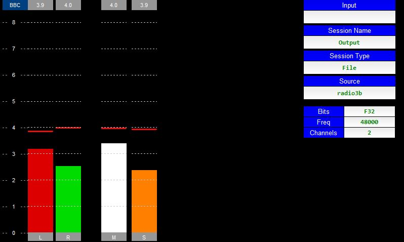
Tapping on the panel should bring up the Screens/Options menu and tapping on the panel again should make the plugin go back to full screen.
Note: not all plugins have a full screen mode. If not then the Screens/Options menu will always be displayed.

The two tab buttons on the right hand side allow the user to:
Screen Selection
This lists all the Monitor and Test plugins and allow the user to change what screen they are looking at. Underneath this list are a number of other buttons that allow the user to
Note: If the input device is AoIP (as the image above) then the user can tap the green button to bring up an AoIP selection panel as below
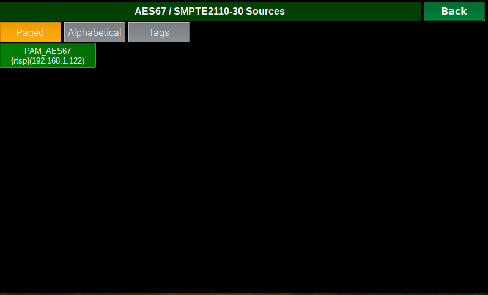Option
Selection
Shows the possible options for the selected plugin (see FFT example below).
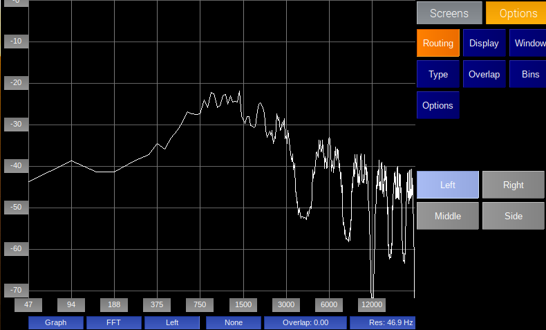
The settings page is built in to the core application. It is can be found by choosing the Screens tab. Note: it is possible to set a PIN to protect entry to the Settings screens
It consists of a number of sub-pages which can be selected by pressing one of the Option Selection buttons:
The stop strap of the page shows the hostname of the unit and the current version number of the core application.
The audio input page allows the user to select what audio source he is monitoring. The page is divided in to two sections. The top list shows the input types and the list below shows all possible inputs of the selected type.
The buttons at the bottom are (from left to right) Home, Previous Page, Next Page, End. They only show if there are more possible inputs than space on the panel.
There is a gain slider at the bottom which can be used to change the volume of the incoming audio (Note: this is done in software not controlling any hardware).
There are 4 possible input types
Turns off the audio input
Selecting this will list all possible physical audio inputs to the raspberry pi. If you have the HifiBerry digi+ hat connected then you should select snd_rpi_hifiberry_digi:
AoIPSelecting this will list all discovered or manually entered AES67/Livewire/Ravenna sources. You can edit this list by pressing the Manage button. This will bring up the AoIP screen
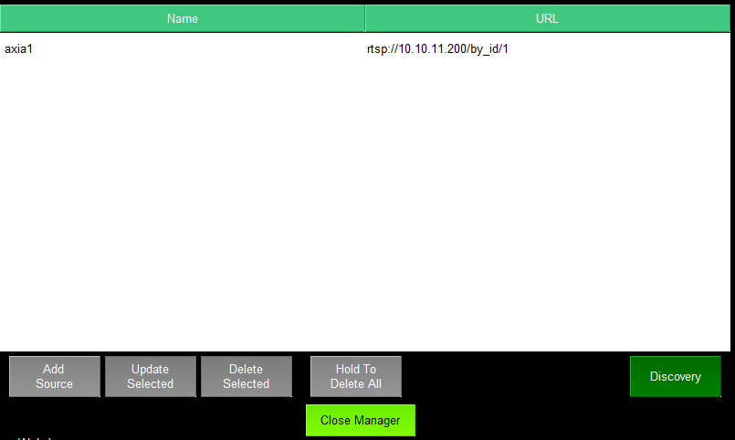
From here you can manually add/edit/delete AoIP sources

Or press Discovery to bring up the mDNS/SAP discovery dialog
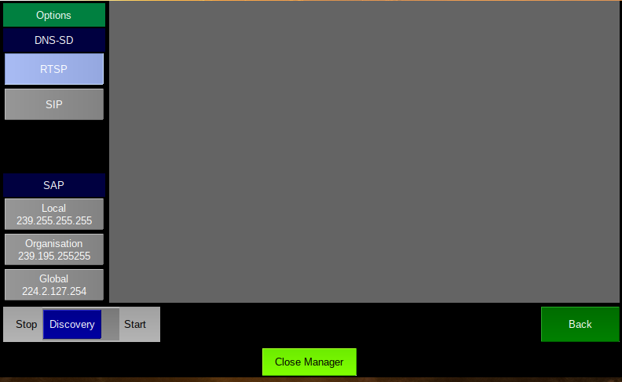From here the user can choose to listen from RTSP mDNS messages and/or SAP messages.
Note: Usually selecting "Local" is enough if you wish to listen for SAP
messages.
Note: Currently SIP is not fully implemented.
Press the Discovery toggle button to Start/Stop discovery. The right hand side of the screen is log showing what has been discovered.
Note: SAP messages can take a minute or two to appear depending on the equipment sending them.
This allows the user to enter manual settings to connect to a multicast AES67/SMPTE2110-30 audio stream.
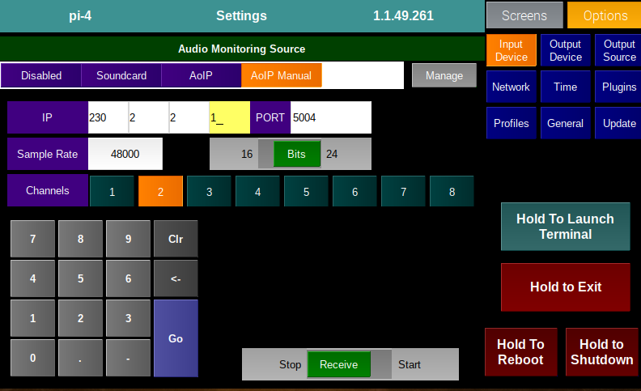
The procedure is as follows:
Note: You must stop the stream if you want to make any changes to the receiver.
When you press the Receive button an SDP "file" is created and sent to the AoIP receiver. You can see the contents of the SDP from the Log or Session Info plugin.
The audio output page allows the user to choose what audio output device to use if any. The options are "Disabled", "Soundcard" or AoIP.
Soundcard (as shown above):
The list of available soundcard outputs is listed along with the audio buffer delay and an option to change the volume of the audio before it is sent to the soundcard.
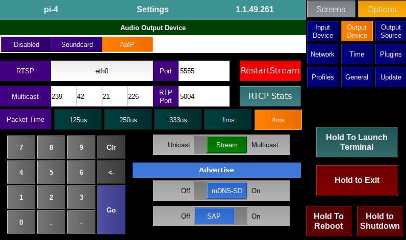AoIP (as shown above):
This panel allows the user to configure the SMPTE2110-30 sender. The sender can work in two modes
The procedure is as follows
Note: If the optional NMOS module is active then these settings may be overwritten via NMOS.
Note: If you make any changes to these settings you may need to press the Restart Stream button to see any effect.
RTCP Stats
The PAM AoIP server sends out RTCP messages as a matter of course. From the AoIP panel (by pressing the RTCP Stats button) you can bring up a number of panels which allow you to analyse the data.
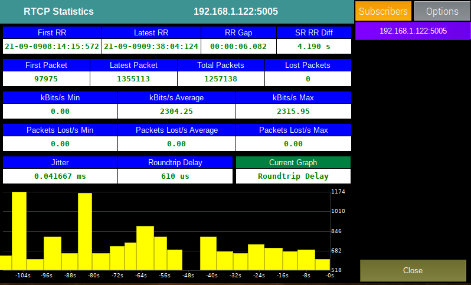
The left hand side of the panel shows the statistics and a graph/histogram at the bottom.
The right hand side of the panel shows either the clients that are taking the stream (Subscribers) or a selection of options to change the graph display
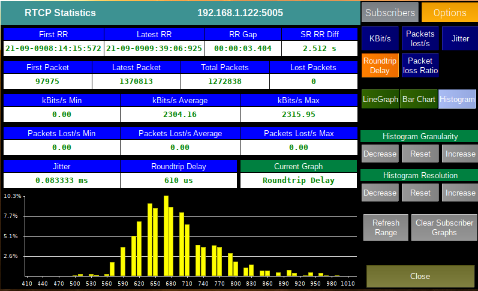
From the options pane you can
Output Source
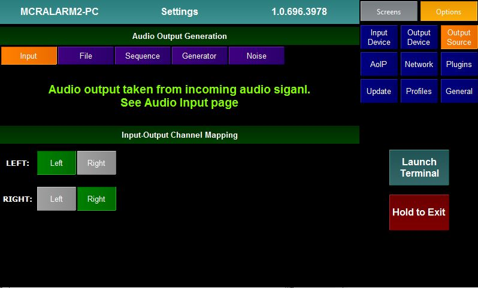
The output source page allows the user to choose the source of audio that the PAM will output. Playback must be set to "On" from the Audio Output setting page to enable this panel.
There are 5 inbuilt possible source options
Input
See screen above. The audio output is taken from the audio input to the PAM. The user can choose what audio channel is output on the Left and Right legs of the output/
File

Audio is played back from a wav file. The panel lists all the wav files found on the PAM. The wav file is looped.
Sequence

The PAM can play back a sequence of tones. These can be created/edited using the Sequence Editor.
The panel shows the sequences that have been created.
Generator
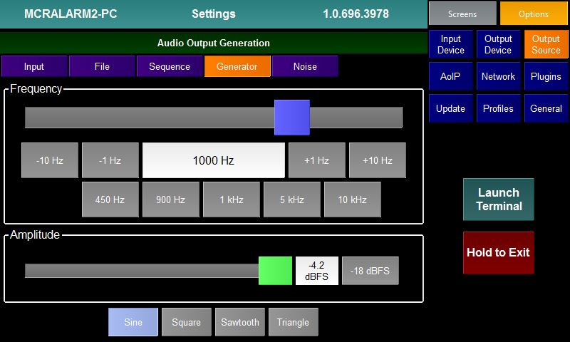
If the Generator option is selected the PAM will output a single frequency tone. The Generator panel allows the user to select the Frequency, Amplitude and shape of the wave form.
Noise

The PAM can output different colours of Noise. The user can select the noise type and amplitude.
Generator Plugins
It is possible to write plugins to act as output sources. Any loaded plugins will appear in the options list. Selecting the plugin will bring up the settings page for that plugin and use it to generate audio samples. The screenshot below shows the LTC plugin

Information on generator plugins can be found on their individual pages.

The Network page allows the user to set the properties of the wired and wifi connections of the Pi. It also shows whether each network device is connected or not.
It is also possible from this screen to bring up the WiFi manager.
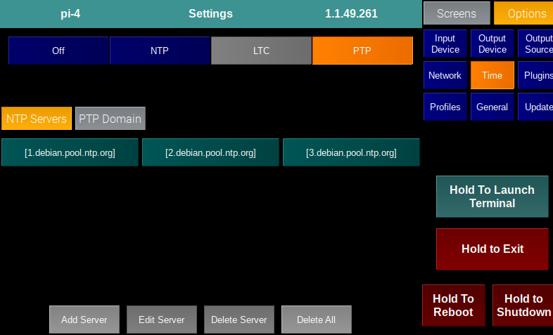
The Time panel allows the user to decide whether he wants to sync the PAM's system clock to NTP or PTP.
It also allows the user to define the NTP servers and the PTP domain.
Plugins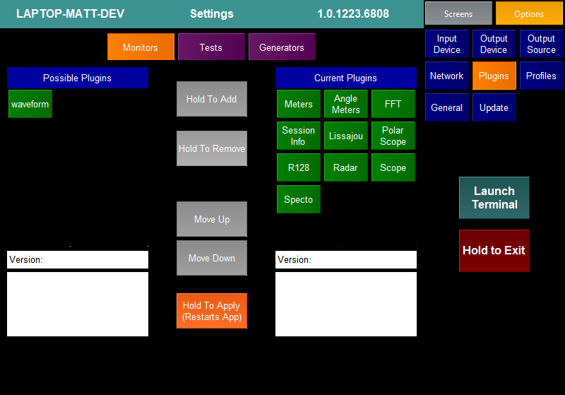
The plugins page allows the user to decide which Monitor,Test and Generator plugins he wishes to have running in the application and the order that they will appear.
The list at the top of the screen decides whether the user is looking at Monitor, Test or Generator Plugins.
The left hand side of the screen lists all plugins of the relevant type that have not currently been assigned to run in the application. The section below shows the version number and a brief description of the selected plugin.
The right hand side of the screen lists all the plugins of the relevan type that are currently assigned to run in the application. They are listed in the order that they appear on the Screen Selection buttons. The section below shows the version number and a brief description of the plugin.
To Add A New Plugin
To Remove A Plugin
To Change The Position Of A Plugin
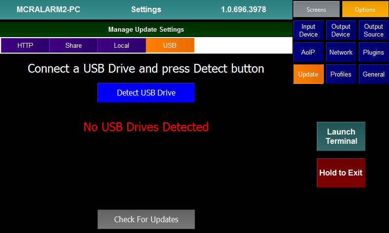
The Update screen allows the user to decide in where updates should be retrieved from. There are 4 options
Once the method of updating has been decided the user can press the Check For Updates button to launch the Update Manager.

The Update Manager lists all plugins, core applications and libraries, profiles and documentation.
The user can select whether he wishes to see all the types of updates or a subsection and also whether the manager should only show updates that are newer than the installed ones.
The user can select one or more items (or use the (De)Select All buttons) and then View the Changelogs for the items, View the Dependencies for the items or simply Update the Selected items.
On pressing Update Selected all the selected items and any dependencies will be updated. Note the application must be restarted for the update to finally take effect.
Changelog

On pressing the View Changelog button the user is presented with a page that lists all the selected items and the changes that have been made to each item.
Pressing the View Changelog button will return the user to the Update Manager screen.
Dependencies

On pressing the View Dependencies button the user is presented with a page that lists all the selected items. Underneath each item is a table showing the libraries (with version number) that this item depends on. Should the user choose to update the item then the depencies will also be updated.
Pressing the View Dependencies button will return the user to the Update Manager screen.
Profiles

It is possible to save the state of the PAM (including all Setting values and Plugin option values) as a Profile for reloading at a later date.
The above panel lists all the saved profiles and allows the user to:
Note: Loading a profile will restart the PAM application and overwrite all the current Settngs and Options
General

The General settings page has a number of miscellaneous options:
The Help page is built in to the core application.
Pressing the Help page button will bring up the help for the currently selected plugin.
Pressing the Close button will return the user to the selected plugin.
The Log page is built in to the core application.
The log page shows a detailed log of what the application has been up to
since it last started. The user can use the Home,
Page Up, Page
Down and End
to navigate through the log. The user can also swipe on the screen to
scroll the log.
If the Scroll Lock switch is set to Scroll then the log will keep refreshing. If set to Lock then the currently display page will remain.
Pressing Clear Log will clear all the log pages.
The Test page is built in to the core application. It is always the fourth to last Screen Selection button.
The page simply acts as a host page for all Test plugins. When the user selects the Test page the Option Selection buttons will list all the loaded Test plugins and the last selected one will be displayed.